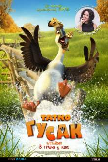
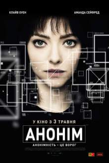
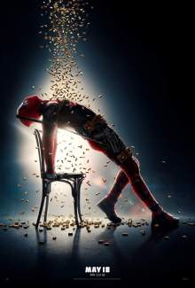

мультфільм
Duck Duck Goose.
Прем'єра в Україні 3 травня 2018.
«До зльоту готові!»
 Гоноровий гусак Пенг залишає свою зграю, адже хоче жити за власними правилами.
Але одного разу він випадково рятує двох осиротілих каченят, Чі та Чао, від страшного кота Банзу.
Після того малюки прив’язуються до Пенга, як до татуся.
Мимохіть гусак погоджується доглянути малих, адже насувається зима, а навколо чатують кровожерливі звірі.
Незвичайна трійця вирушає у цікаву, але й сповнену небезпек подорож через ліси та гори, щоб віднайти свої рідні зграї та...самих себе.
Anon
Прем'єра в Україні 3 травня 2018.
 Ідеальне суспільство майбутнього: режим тотального нагляду, відсутність особистого життя, приватних територій і цивільних прав.
Здавалося б, в повністю контрольованій державі немає місця помилкам і правопорушенням.
Але одного разу детектив Сол Фріленд знайомиться з дівчиною, яка не числиться в базах даних.
Перед копом відкриваються двері злочинного світу нової ери...
Deadpool 2.
Прем'єра в Україні 17 травня 2018.
«Prepare for the second coming»

Переживши майже смертельну вірусну діарею великої рогатої худоби, спотворений шеф-кухар бореться за свою мрію — стати найгарячішим барменом Мейберрі.
Паралельно він вчиться справлятися з втратою почуття смаку.
У спробах повернути його до життя, а також конденсатор тимчасового потоку, Вейд повинен битися з ніндзя, якудза і зграєю сексуально агресивних собак.
Подорожуючи навколо світу, він пізнає всю значимість сім'ї, дружби і аромату, знайде той самий новий запах пригод і нарешті отримає таку бажану кавову чашку з написом «Кращий коханець у світі».